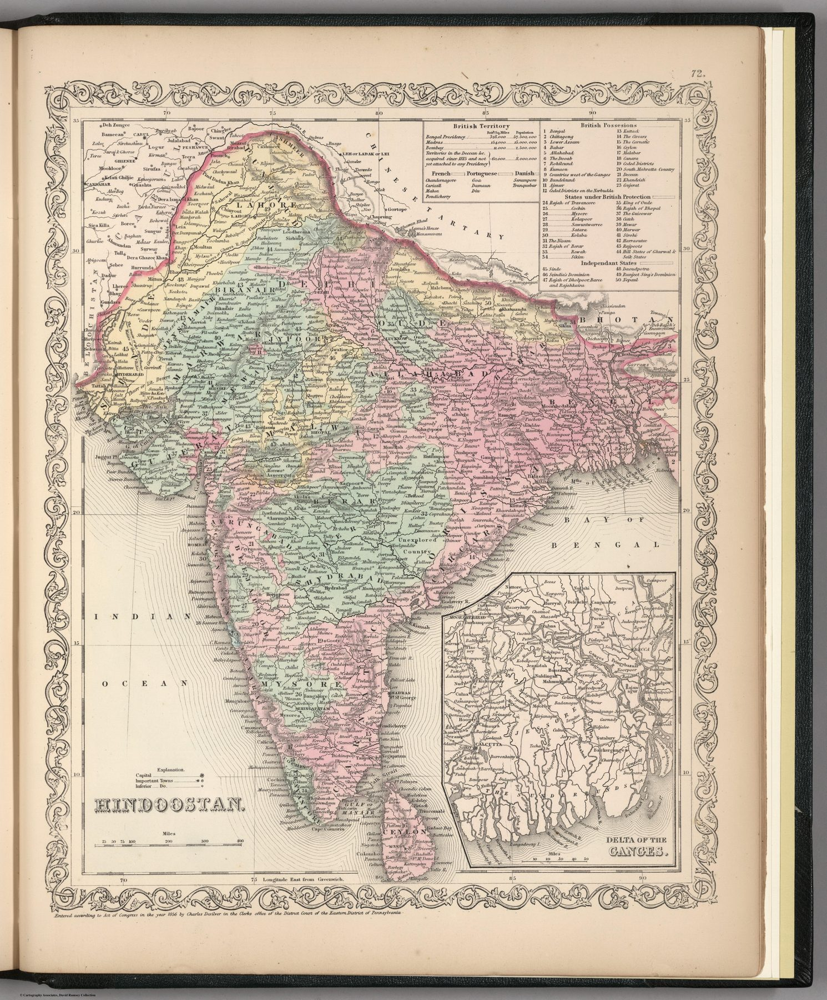

← Administered Empire and Victorian Atlas

The atlas object
Samuel Augustus Mitchell’s map appeared in the 1857 Philadelphia issue of the New Universal Atlas, published by Charles DeSilver. The plate was entered for copyright in 1856 – a warning against reading every feature as a commentary composed after the events of 1857.
Territory by political status
Colour and legend sort the subcontinent according to legal and political relationship with British power. The distinction between direct territory, possessions and independent states turns a complex landscape of sovereignty into a compact imperial classification.
India for an American reader
The map was made for a commercial atlas in Philadelphia. Its categories show how thoroughly British imperial geography had become the international default through which India was explained even outside Britain.
On the sheet
The tables in the upper right are the plate’s real content, and they are old. ‘British Territory’ is given by presidency with area and population; ‘British Possessions’ are numbered 1 to 23, ‘States under British Protection’ 24 to 44 and ‘Independant States’ 45 to 50, the numbers repeated on the map. Among the protected states are Satara, which had lapsed in 1848, and the King of Oude, annexed in February 1856; among the independent ones Sinde, taken in 1843, and ‘Runjeet Sing’s Dominion’, a Punjab annexed in 1849 and named for a ruler dead since 1839. The Danish possessions, Serampore and Tranquebar, had been sold to Britain in 1845. The geography under the legend is current enough; the political knowledge it classifies is twenty years stale, which is what a Philadelphia plate re-engraved from earlier models would carry. An inset shows the Delta of the Ganges.
The gaze
Copyrighted in 1856, the plate fixes the atlas image of India that the uprising interrupted. Mitchell’s three-way legend – direct territory, other possessions, independent states – is the classification an American household owned on the eve of 1857, and nothing in it anticipates trouble.
In the Deccan timeline
1857 in the Deccan (1857–1858) · The Crown takes over (1 November 1858)